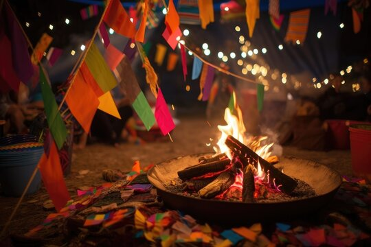
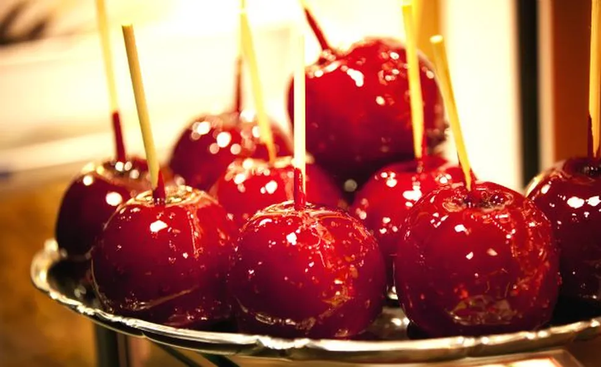
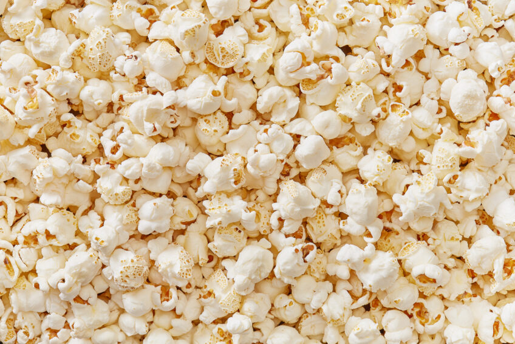
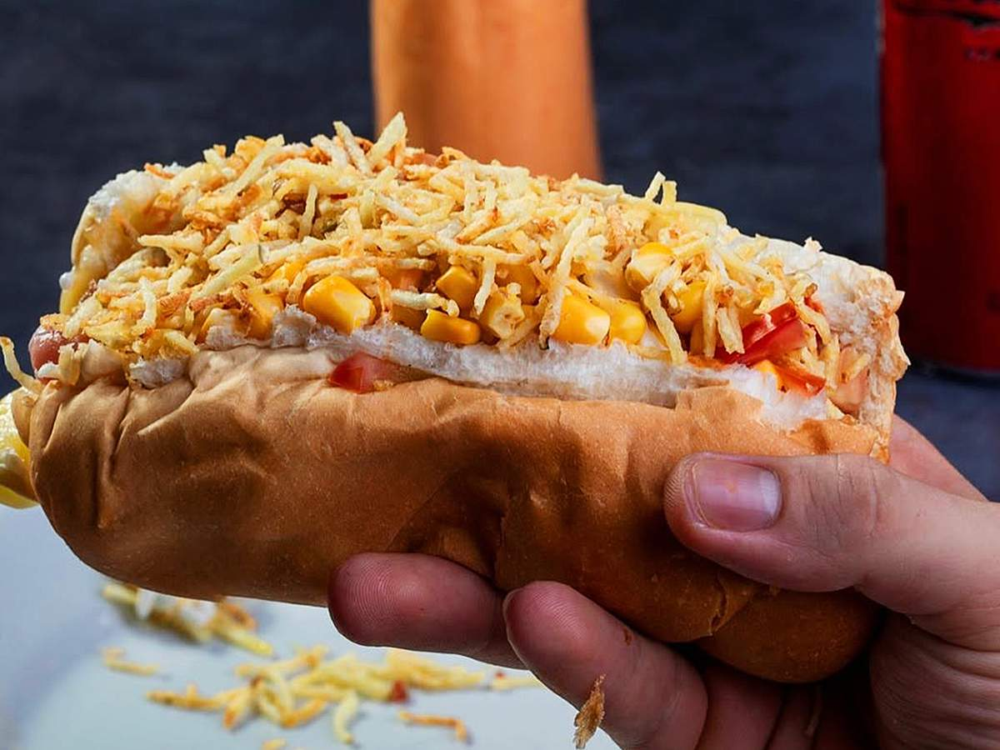
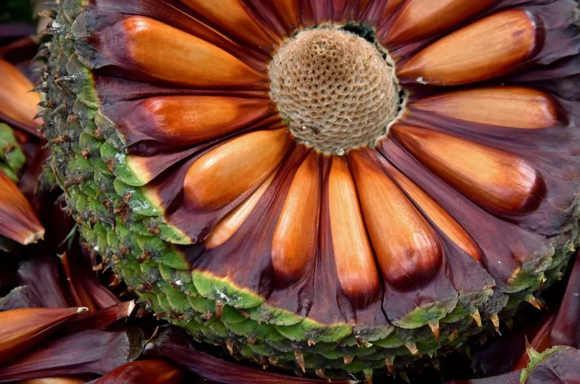
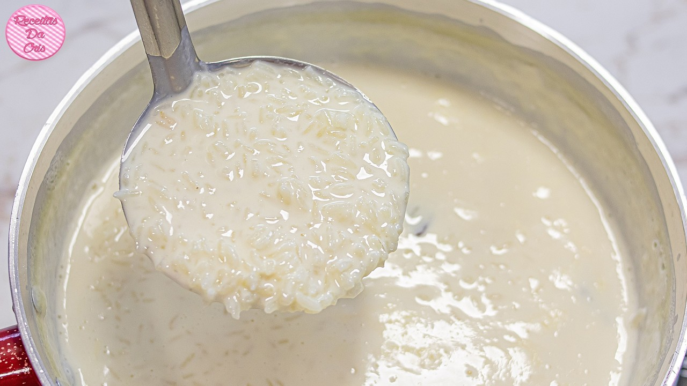
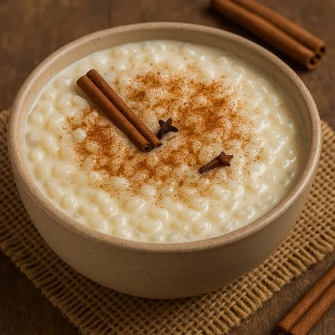
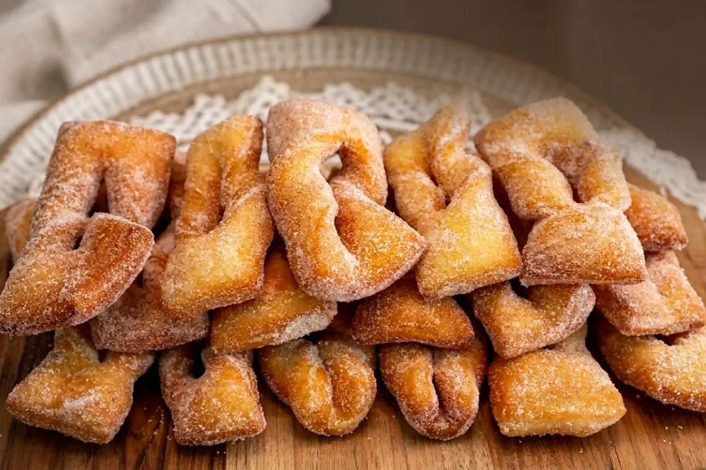
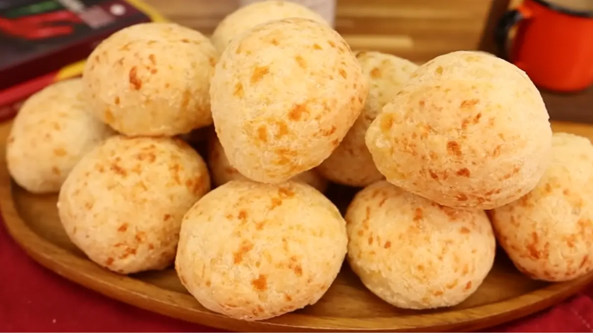
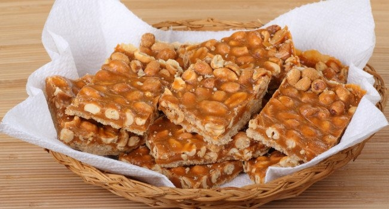

<!DOCTYPE html>
<html lang="pt-br">
<head>
    <meta charset="UTF-8">
    <meta name="viewport" content="width=device-width, initial-scale=1.0">
    <title>Sabores da Festa Junina</title>
</head>

    <link rel="stylesheet" href="style.css">

    <link rel="preconnect" href="https://fonts.googleapis.com">

    <link rel="preconnect" href="https://fonts.gstatic.com" crossorigin>

    <link href="https://fonts.googleapis.com/css2?family=Bebas+Neue&family=Poppins:wght@300;400;500;600;700&display=swap" rel="stylesheet">

    <link rel="icon" href="./fogueira.jpg">

<body>
    
</body>
</html>


</head>

<body>

    <header>

        <div class="bandeirinhas">
            <span></span>
            <span></span>
            <span></span>
            <span></span>
            <span></span>
            <span></span>
            <span></span>
            <span></span>
            <span></span>
            <span></span>
            <span></span>
            <span></span>
            <span></span>
        </div>

        <nav>

            <h1>Sabores da Festa Junina</h1>

            <ul>
                <li><a href="#inicio">Início</a></li>
                <li><a href="#comidas">Comidas</a></li>
                <li><a href="#sobre">Sobre</a></li>
            </ul>

        </nav>

    </header>


    <section id="inicio" class="inicio">

        <div class="texto-inicio">

            <span class="subtitulo">
                ARRAIÁ DOS SABORES
            </span>

            <h2>
                Comidas típicas
                <br>
                de Festa Junina
            </h2>

            <p>
                Confira algumas das comidas que não podem faltar
                no nosso arraiá!
            </p>

            <a href="#comidas" class="botao">
                Ver comidas
            </a>

        </div>


        <div class="imagem-inicio">

            

        </div>

    </section>


    <section id="comidas" class="comidas">

        <h2>Delícias do Arraiá</h2>

        <p class="descricao">
            Confira algumas das comidas mais tradicionais
            das festas juninas da Região Sul.
        </p>

        <div class="pesquisa">

            <input
                type="text"
                id="campoPesquisa"
                placeholder="Pesquise uma comida..."
            >

        </div>


        <div class="cards" id="listaComidas">


            <div class="card" data-nome="bolo de milho">

                

                <div class="card-conteudo">

                    <h3>Bolo de milho</h3>

                    <p>
                        Bolo macio e saboroso, feito com milho
                        e perfeito para acompanhar um café quentinho.
                    </p>

                    <button onclick="mostrarInfo('bolo de milho')">
                        Saiba mais
                    </button>

                </div>

            </div>


            <div class="card" data-nome="paçoca">

                

                <div class="card-conteudo">

                    <h3>Paçoca</h3>

                    <p>
                        Doce tradicional feito com amendoim e açúcar,
                        muito presente nas festas juninas.
                    </p>

                    <button onclick="mostrarInfo('paçoca')">
                        Saiba mais
                    </button>

                </div>

            </div>


            <div class="card" data-nome="maçã do amor">

                

                <div class="card-conteudo">

                    <h3>Maçã do amor</h3>

                    <p>
                        Maçã coberta por uma deliciosa camada
                        vermelha e crocante de açúcar.
                    </p>

                    <button onclick="mostrarInfo('maçã do amor')">
                        Saiba mais
                    </button>

                </div>

            </div>


            <div class="card" data-nome="pipoca">

                

                <div class="card-conteudo">

                    <h3>Pipoca</h3>

                    <p>
                        Um clássico do arraiá, simples, crocante
                        e impossível de deixar de lado.
                    </p>

                    <button onclick="mostrarInfo('pipoca')">
                        Saiba mais
                    </button>

                </div>

            </div>


            <div class="card" data-nome="cachorro-quente">

                

                <div class="card-conteudo">

                    <h3>Cachorro-quente</h3>

                    <p>
                        Lanche popular das festas, geralmente preparado
                        com salsicha, molho e vários acompanhamentos.
                    </p>

                    <button onclick="mostrarInfo('cachorro-quente')">
                        Saiba mais
                    </button>

                </div>

            </div>


            <div class="card" data-nome="pinhão">

                

                <div class="card-conteudo">

                    <h3>Pinhão</h3>

                    <p>
                        Semente típica do Sul, muito consumida
                        quentinha e cozida nas festas de inverno.
                    </p>

                    <button onclick="mostrarInfo('pinhão')">
                        Saiba mais
                    </button>

                </div>

            </div>


            <div class="card" data-nome="arroz-doce">

                

                <div class="card-conteudo">

                    <h3>Arroz-doce</h3>

                    <p>
                        Sobremesa cremosa feita com arroz,
                        leite, açúcar e canela.
                    </p>

                    <button onclick="mostrarInfo('arroz-doce')">
                        Saiba mais
                    </button>

                </div>

            </div>


            <div class="card" data-nome="canjica">

                

                <div class="card-conteudo">

                    <h3>Canjica</h3>

                    <p>
                        Doce cremoso preparado com milho branco,
                        leite, açúcar e canela.
                    </p>

                    <button onclick="mostrarInfo('canjica')">
                        Saiba mais
                    </button>

                </div>

            </div>


            <div class="card" data-nome="cueca virada">

                

                <div class="card-conteudo">

                    <h3>Cueca virada</h3>

                    <p>
                        Massa doce frita e crocante,
                        geralmente polvilhada com açúcar.
                    </p>

                    <button onclick="mostrarInfo('cueca virada')">
                        Saiba mais
                    </button>

                </div>

            </div>


            <div class="card" data-nome="pão de queijo">

                

                <div class="card-conteudo">

                    <h3>Pão de queijo</h3>

                    <p>
                        Tradicional quitute feito com polvilho e queijo,
                        muito querido no Brasil.
                    </p>

                    <button onclick="mostrarInfo('pão de queijo')">
                        Saiba mais
                    </button>

                </div>

            </div>


            <div class="card" data-nome="rapadura">

                

                <div class="card-conteudo">

                    <h3>Rapadura</h3>

                    <p>
                        Doce tradicional feito a partir da cana-de-açúcar,
                        com sabor intenso e textura firme.
                    </p>

                    <button onclick="mostrarInfo('rapadura')">
                        Saiba mais
                    </button>

                </div>

            </div>


            <div class="card" data-nome="bolos caseiros">

                

                <div class="card-conteudo">

                    <h3>Bolos caseiros</h3>

                    <p>
                        Bolos simples e deliciosos, como fubá,
                        chocolate e cenoura, que deixam o arraiá
                        ainda mais gostoso.
                    </p>

                    <button onclick="mostrarInfo('bolos caseiros')">
                        Saiba mais
                    </button>

                </div>

            </div>


        </div>


        <p id="semResultado" class="sem-resultado">
            Nenhuma comida encontrada
        </p>

    </section>


    <section id="sobre" class="sobre">

        <div>

            <span class="subtitulo">
                SOBRE A FESTA JUNINA
            </span>

            <h2>
                Uma festa cheia de sabor!
            </h2>

            
  <p>A Festa Junina é uma das celebrações mais alegres e tradicionais do Brasil,
sendo comemorada durante os meses de junho e julho. Ela é conhecida pelas suas músicas animadas, 
danças, brincadeiras, roupas caipiras e, principalmente, pelas comidas típicas que fazem parte dessa época tão especial. 
No Sul do Brasil, a festa ganha um toque diferente, com sabores e tradições que combinam com a cultura da região.     </p>

<p>Entre as comidas mais presentes nos arraiás do Sul estão o pinhão, muito consumido nos dias frios, a cuca, o bolo de milho,
a pipoca, a paçoca, o cachorro-quente e a maçã do amor. Também é comum encontrar doces caseiros, amendoim, pé de moleque e
outras delícias que deixam as festas ainda mais saborosas. Essas comidas são uma parte importante da comemoração, pois 
reúnem tradições e lembranças que passam de geração em geração.     </p>

<p>Além da culinária, as festas juninas são decoradas com bandeirinhas coloridas, balões decorativos e fogueiras, 
que ajudam a criar o clima típico de arraiá. As quadrilhas também são muito populares, reunindo crianças, jovens e 
adultos em danças divertidas ao som de músicas tradicionais. Outra parte importante são as brincadeiras, como pescaria, 
argolas e correio elegante, que garantem a diversão de todos.     </p>

<p>No Sul, as baixas temperaturas durante essa época tornam a comemoração ainda mais aconchegante, 
sendo uma ótima oportunidade para aproveitar comidas quentinhas. 
Em escolas, comunidades e cidades, as festas juninas ajudam a preservar a cultura popular brasileira e valorizam os costumes   
 de cada região. </p>

<p>Por isso, a Festa Junina é muito mais do que uma comemoração: ela representa
tradição, união, alegria e cultura. É uma época perfeita para reunir a família e os amigos,
experimentar sabores típicos, participar das brincadeiras e aproveitar tudo o que o arraiá tem de melhor!
            </p>

        </div>

    </section>


   <section style="width: 100%; text-align: center; padding: 70px 20px;">

    <h2 style="text-align: center; color: #3d1b0f; margin-bottom: 30px;">
        Vídeo de Comidas Típicas
    </h2>

    <iframe 
        src="https://www.youtube.com/embed/FTWW_0JX940?si=2KusB-Cc8vd2Irvy"
        title="YouTube video player"
        frameborder="0"
        allow="accelerometer; autoplay; clipboard-write; encrypted-media; gyroscope; picture-in-picture; web-share"
        referrerpolicy="strict-origin-when-cross-origin"
        allowfullscreen
        style="display: block; width: 900px; height: 500px; max-width: 90%; margin: 0 auto;">
    </iframe>

</section>


    <footer>

        <h3>Sabores da Festa Junina</h3>

    </footer>


    <script src="script.js"></script>

</body>

</html>